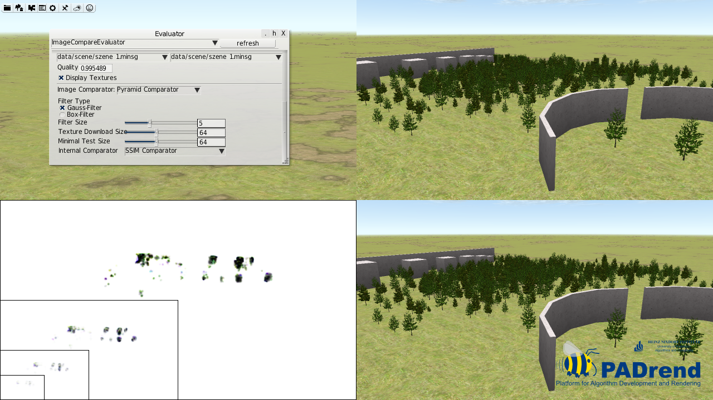
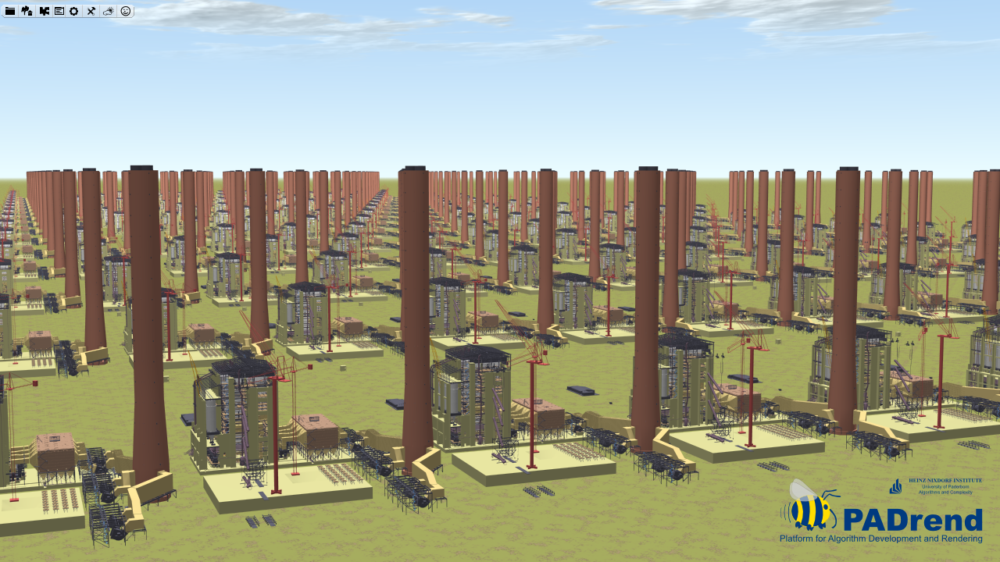
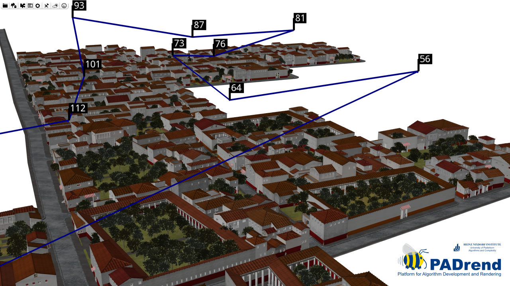
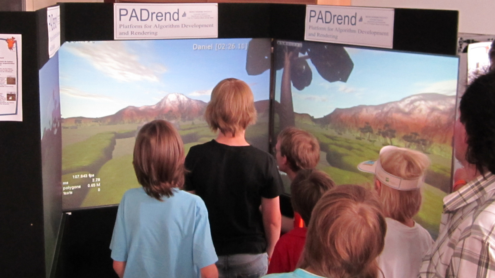
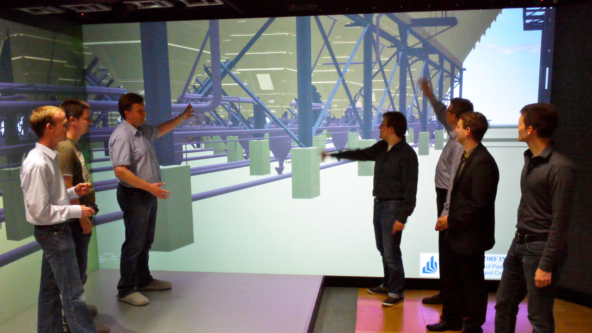
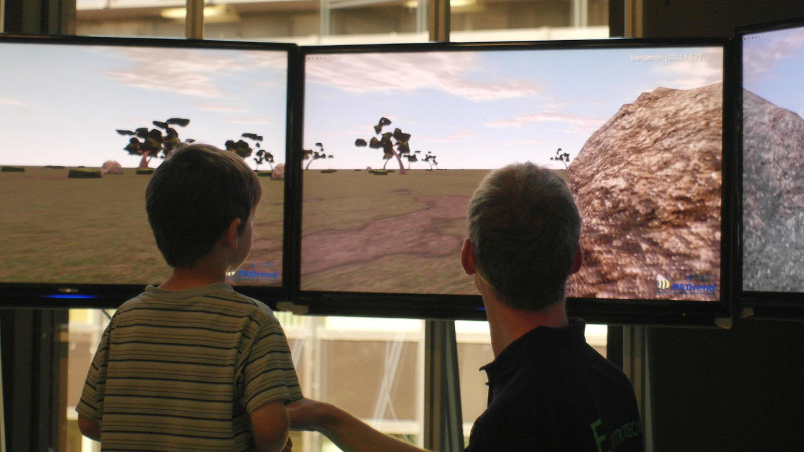

Screen shot of the image comparison feature inside PADrend.

Screen shot of a 3D rendering of 256 Power Plant models with Spherical Visibility Sampling.

Screen shot of a 3D rendering of Pompeii and a camera path.

Photo of the PADrend booth during the Maus Türöffner-Tag 2011.

Photo of PADrend used in the HD visualization center in 2012.

Photo of the PADrend booth during the Paderborner Wissenschaftstage 2013.